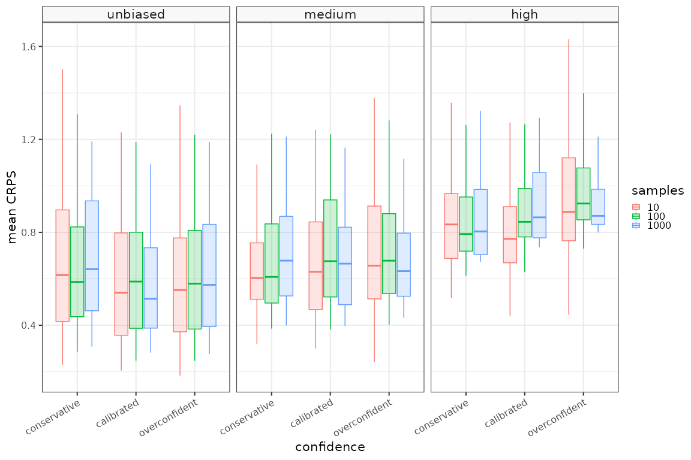
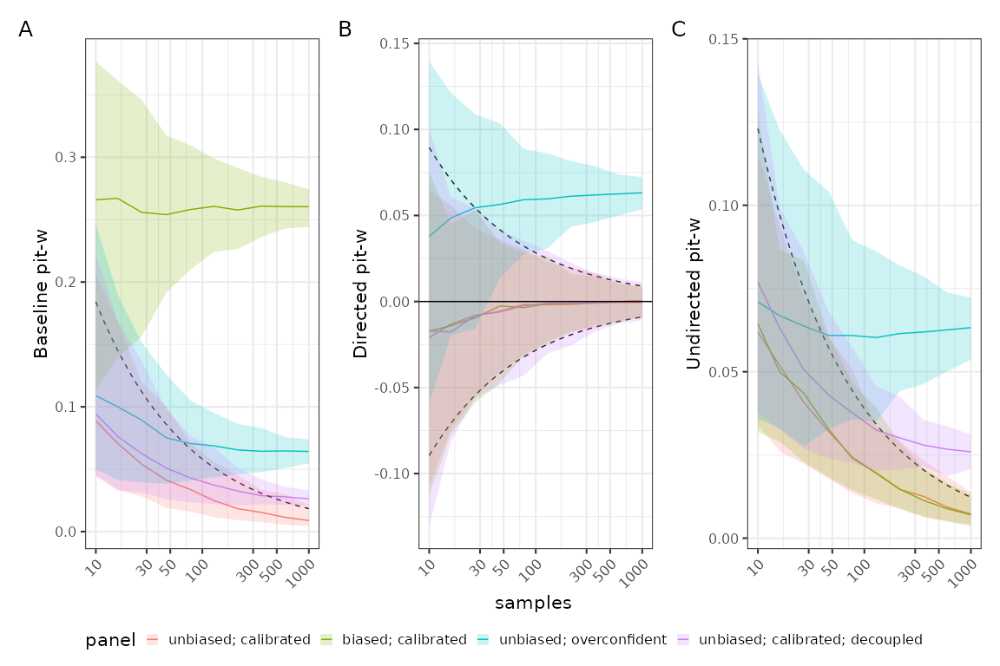

Testing for bias, dispersion miscalibration and skill spread decoupling
Source:vignettes/sample-sizes-and-power.Rmd
sample-sizes-and-power.Rmd
# library(pitw)
devtools::load_all()
#> ℹ Loading pitw
library(tidyverse)
#> ── Attaching core tidyverse packages ──────────────────────── tidyverse 2.0.0 ──
#> ✔ dplyr 1.2.1 ✔ readr 2.2.0
#> ✔ forcats 1.0.1 ✔ stringr 1.6.0
#> ✔ ggplot2 4.0.4 ✔ tibble 3.3.1
#> ✔ lubridate 1.9.5 ✔ tidyr 1.3.2
#> ✔ purrr 1.2.2
#> ── Conflicts ────────────────────────────────────────── tidyverse_conflicts() ──
#> ✖ readr::edition_get() masks testthat::edition_get()
#> ✖ dplyr::filter() masks stats::filter()
#> ✖ dplyr::lag() masks stats::lag()
#> ✖ readr::local_edition() masks testthat::local_edition()
#> ℹ Use the conflicted package (<http://conflicted.r-lib.org/>) to force all conflicts to become errors
.gg_pedantic(size = 0.5)
#> Warning: The requested font(s): [Roboto], are not present on the system. Alternatives will be used.
#> This warning is displayed once per session.
fig_dir = here::here("vignettes", "main", "fig")
set.seed(1001)We compared the PIT-Wasserstein scores at 10, 100 and 1,000 predictions per estimator, then varied sample size across four prespecified scenarios. These simulations show how sample size affects our ability to distinguish calibrated forecasts from the departures represented in Figures 2 and 3.
| Simulation 1 (Figure 2) | Simulation 2 (Figure 3) | |
|---|---|---|
| Question | How well do the scores separate scenarios at three sample sizes? | How do the scores and rejection thresholds change with sample size? |
| Design | \(3\times3\) grid of dispersion calibration and bias | 4 named scenarios swept over \(n\) |
| \(n\) | 10, 100, 1000 | 10 log-spaced values from 10 to 1000 |
| Replicates | 100 per cell | 250 per point |
| Display | boxplots against critical values | median and 95% range against critical value |
All predictive distributions are normal. The dashed lines mark the nominal 5% rejection thresholds from the significance vignette at each sample size. The boxplots and ribbons show how the scores vary between replicates. The proportion of replicates beyond the relevant threshold gives the rejection rate for that scenario.
1. Separation at fixed sample sizes (Figure 2)
The first simulation varies location bias and the ratio of reported spread to error spread at three sample sizes.
| Factor | Levels |
|---|---|
| dispersion calibration \(\sigma_\mathcal{S}/\sigma_\mathcal{E}\) | \(2/3\) (overconfident), \(1\) (calibrated), \(3/2\) (conservative) |
| bias \(\mu_\mathcal{E}\) | \(0\) (unbiased), \(0.5\) (medium), \(1\) (high) |
| predictions per estimator \(n\) | 10, 100, 1000 |
| replicate estimators | 100 per cell |
We draw the error scale \(\sigma_\mathcal{E}\) log-uniformly on \([\tfrac12, 2]\) for each replicate and set the reported spread to \(\sigma_\mathcal{S} = \sigma_\mathcal{E}\times\) calibration. The absolute scale varies while the spread ratio stays at its assigned level. All predictions from an estimator report the same spread (\(\kappa_\mathcal{S} = 0\)).
The location offsets of 0, 0.5 and 1 are in outcome units. Their size relative to the error standard deviation therefore varies between estimators.
# Simulation setup
bias_limit = 1
conf_range = 2
runs = 100
variability = 0 # this is a dispersion measure
config = tidyr::crossing(
calibration = c(1/1.5, 1, 1.5),
bias_location = c(0, 0.5, 1) * bias_limit,
samples = c(10,100,1000),
run = 1:runs
) %>%
dplyr::group_by(calibration, bias_location, samples) %>%
dplyr::mutate(
true_value = 0,
bias_dist = "norm",
bias_scale = exp(runif(runs, -log(conf_range), log(conf_range))),
sharpness_dist = "lnorm4",
sharpness_location = bias_scale * calibration,
sharpness_scale = variability
)
sim = config %>% generate_simulation()
#> interfacer: development mode active (test environment).
#> This message is displayed once every 8 hours.
#> Warning: unexpected groups in the return value of generate_simulation(...):
#> observed: calibration+bias_location+samples+run+bias_dist+bias_scale+sharpness_dist+sharpness_location+sharpness_scale+link+dist+run_id+adjust
#> expected: <any>+dist+link+calibration+adjust
#> Warning: ireturn validation did not pass without changing the value.
scores = sim %>% prediction_scores()
scores = scores %>%
mutate(
confidence = case_when(
calibration < 1 ~ "overconfident",
calibration > 1 ~ "conservative",
TRUE ~ "calibrated"
) %>%
factor(levels = c("conservative", "calibrated", "overconfident")),
bias = case_when(
bias_location == 0.5 ~ "medium",
bias_location == 1 ~ "high",
TRUE ~ "unbiased"
) %>%
factor(levels = c( "unbiased", "medium", "high")),
samples = as.factor(samples)
)
crit_b = pitw::b_pit_significance(NA, c(10,100,1000))
plot1a = ggplot(scores, aes(y=B_pit, x = confidence, colour= bias, fill = bias))+
geom_boxplot(outliers=FALSE, alpha = 0.2)+
geom_hline(data = crit_b, aes(yintercept = critical_0.05), linetype="dashed")+
facet_wrap(~ n_predictions)+
ylab("Baseline pit-w")+
xlab(NULL)
crit_d = pitw::d_pit_significance(NA, c(10,100,1000))
plot1b = ggplot(scores, aes(y=D_pit, x = confidence, colour= bias, fill = bias))+
geom_boxplot(outliers=FALSE, alpha = 0.2)+
geom_hline(data = crit_d, aes(yintercept = critical_0.05), linetype="dashed")+
geom_hline(data = crit_d, aes(yintercept = -critical_0.05), linetype="dashed")+
facet_wrap(~ n_predictions)+
ylab("Directed pit-w")+
xlab(NULL)
crit_u = pitw::u_pit_significance(NA, c(10,100,1000))
plot1c = ggplot(scores, aes(y=U_pit, x = confidence, colour= bias, fill = bias))+
geom_boxplot(outliers=FALSE, alpha = 0.2)+
geom_hline(data = crit_u, aes(yintercept = critical_0.05), linetype="dashed")+
facet_wrap(~ n_predictions)+
ylab("Undirected pit-w")+
xlab(NULL)
plot1 = plot1a+plot1b+plot1c+patchwork::plot_annotation(tag_levels = "A")+patchwork::plot_layout(guides = "collect",axes="collect_x", ncol=1)
.gg_save_as(
plot1,
file.path(fig_dir, "fig2-critical-limits"),
size = std_size$two_third,
formats = c("pdf", "eps")
)
Figure 2 has one panel for each score. Within each panel, the columns show the three sample sizes and the colours identify the bias levels.
\(B_{pit}\) increased with bias and with departures from a spread ratio of one (panel A). At a given spread ratio, the distributions of \(D_{pit}\) were similar across bias levels (panel B). The conservative scenarios gave negative scores and the overconfident scenarios gave positive scores. \(U_{pit}\) also varied little across bias levels and increased away from a ratio of one (panel C).
At 10 predictions, the simulated groups overlapped and most boxes lay below their upper rejection thresholds or within the two-sided bounds. The groups were more clearly separated at 100 predictions in this design. When planning an evaluation, consider the departure of interest and how many independent predictions are available.
For comparison, the two conventional summaries over the same simulation:
ggplot(scores, aes(y=mean_coverage.0.5, x = confidence, colour= samples, fill = samples))+
geom_boxplot(outliers=FALSE, alpha = 0.2)+
facet_wrap(~ bias)+
ylab("mean 50% coverage")
ggplot(scores, aes(y=mean_crps, x = confidence, colour= samples, fill = samples))+
geom_boxplot(outliers=FALSE, alpha = 0.2)+
facet_wrap(~ bias)+
ylab("mean CRPS")
Coverage increased with reported spread. Increasing the sample size reduced the variability between replicates. Mean CRPS varied with both spread and location bias. The dashed PIT reference thresholds apply to the three scores in Figure 2.2. Power against sample size (Figure 3)
The second simulation varies sample size in four scenarios. In the spread–error decoupling scenario, reported uncertainty varies independently of the errors even though the typical spread has the correct scale.
| Scenario | \(\mu_\mathcal{E}\) | \(\sigma_\mathcal{S}/\sigma_\mathcal{E}\) | \(\kappa_\mathcal{S}\) | Expected response in this design |
|---|---|---|---|---|
| unbiased; calibrated | 0 | 1 | 0 | nothing — this is the null |
| biased; calibrated | 1 | 1 | 0 | \(B_{pit}\) only |
| unbiased; overconfident | 0 | \(2/3\) | 0 | all three scores |
| unbiased; calibrated; decoupled | 0 | 1 | 1 | primarily \(U_{pit}\), also \(B_{pit}\) |
Here the error scale is fixed at \(\sigma_\mathcal{E} = 1\) rather than redrawn, so the only thing varying along each curve is \(n\). Sample sizes are the 10 log-spaced values from 10 to 1000, with 250 replicate estimators at each; the lines are medians and the ribbons the central 95% of replicates.
The critical-value curves are evaluated on a finer grid of 100 sample sizes so that they render as smooth \(1/\sqrt{n}\) decays rather than as segments.
# Second simulation setup
# N.B. overwrites config and scores from above
bias_limit = 1
conf_range = 2
runs = 250
variability = 0 # this is a dispersion measure
config = tidyr::crossing(
samples = floor(10^seq(1,3,length.out=10)),
run = 1:runs,
tidyr::nesting(
panel = forcats::as_factor(c("unbiased; calibrated", "biased; calibrated","unbiased; overconfident", "unbiased; calibrated; decoupled")),
bias_location = c(0,1,0, 0),
calibration = c(1, 1, 2/3, 1),
sharpness_scale = c(0,0,0,1),
)
) %>%
dplyr::mutate(
true_value = 0,
bias_dist = "norm",
bias_scale = 1, #exp(runif(runs, -log(conf_range), log(conf_range))),
sharpness_dist = "lnorm4",
sharpness_location = bias_scale * calibration,
`(σₑ/σₛ)` = forcats::as_factor(sprintf("%0.2f",calibration))
) %>%
dplyr::group_by(calibration, `(σₑ/σₛ)`, panel, samples)
sim = config %>% generate_simulation()
#> Warning: unexpected groups in the return value of generate_simulation(...):
#> observed: samples+run+panel+bias_location+calibration+sharpness_scale+bias_dist+bias_scale+sharpness_dist+sharpness_location+(σₑ/σₛ)+link+dist+run_id+adjust
#> expected: <any>+dist+link+calibration+adjust
#> Warning: ireturn validation did not pass without changing the value.
scores = sim %>% prediction_scores()
crit_b = pitw::b_pit_significance(NA,floor(10^seq(1,3,length.out=100)))
crit_d = pitw::d_pit_significance(NA,floor(10^seq(1,3,length.out=100)))
crit_u = pitw::u_pit_significance(NA,floor(10^seq(1,3,length.out=100)))
plot_b = scores %>% ungroup() %>% group_by(samples, calibration, `(σₑ/σₛ)`, panel) %>% summarise(
q.0.05 = quantile(B_pit, 0.025),
q.0.5 = median(B_pit),
q.0.95 = quantile(B_pit, 0.975)
)
#> `summarise()` has regrouped the output.
#> ℹ Summaries were computed grouped by samples, calibration, (σₑ/σₛ), and panel.
#> ℹ Output is grouped by samples, calibration, and (σₑ/σₛ).
#> ℹ Use `summarise(.groups = "drop_last")` to silence this message.
#> ℹ Use `summarise(.by = c(samples, calibration, (σₑ/σₛ), panel))` for
#> per-operation grouping (`?dplyr::dplyr_by`) instead.
plot2a = ggplot(plot_b, aes(y=q.0.5,ymin=q.0.05,ymax=q.0.95, x = samples))+
geom_line(mapping=aes(colour=panel))+
geom_line(data=crit_b, mapping=aes(x=n_predictions, y=critical_0.05), linetype="dashed", inherit.aes = FALSE)+
geom_ribbon(mapping=aes(fill=panel),alpha=0.2)+
scale_x_log10(n.breaks=9)+
ylab("Baseline pit-w")+
.gg_narrow(45)
plot_d = scores %>% ungroup() %>% group_by(samples, calibration, `(σₑ/σₛ)`, panel) %>% summarise(
q.0.025 = quantile(D_pit, 0.025),
q.0.5 = median(D_pit),
q.0.975 = quantile(D_pit, 0.975)
)
#> `summarise()` has regrouped the output.
#> ℹ Summaries were computed grouped by samples, calibration, (σₑ/σₛ), and panel.
#> ℹ Output is grouped by samples, calibration, and (σₑ/σₛ).
#> ℹ Use `summarise(.groups = "drop_last")` to silence this message.
#> ℹ Use `summarise(.by = c(samples, calibration, (σₑ/σₛ), panel))` for
#> per-operation grouping (`?dplyr::dplyr_by`) instead.
plot2b = ggplot(plot_d, aes(y=q.0.5,ymin=q.0.025,ymax=q.0.975, x = samples))+
geom_line(mapping=aes(colour=panel))+
geom_line(data=crit_d, mapping=aes(x=n_predictions, y=critical_0.05), linetype="dashed", inherit.aes = FALSE)+
geom_line(data=crit_d, mapping=aes(x=n_predictions, y=-critical_0.05), linetype="dashed", inherit.aes = FALSE)+
geom_ribbon(mapping=aes(fill=panel),alpha=0.2)+
geom_hline(yintercept = 0)+
scale_x_log10(n.breaks=9)+
ylab("Directed pit-w")+
.gg_narrow(45)
plot_u = scores %>% ungroup() %>% group_by(samples, calibration, `(σₑ/σₛ)`, panel) %>% summarise(
q.0.05 = quantile(U_pit, 0.025),
q.0.5 = median(U_pit),
q.0.95 = quantile(U_pit, 0.975)
)
#> `summarise()` has regrouped the output.
#> ℹ Summaries were computed grouped by samples, calibration, (σₑ/σₛ), and panel.
#> ℹ Output is grouped by samples, calibration, and (σₑ/σₛ).
#> ℹ Use `summarise(.groups = "drop_last")` to silence this message.
#> ℹ Use `summarise(.by = c(samples, calibration, (σₑ/σₛ), panel))` for
#> per-operation grouping (`?dplyr::dplyr_by`) instead.
plot2c = ggplot(plot_u, aes(y=q.0.5,ymin=q.0.05,ymax=q.0.95, x = samples))+
geom_line(mapping=aes(colour=panel))+
geom_line(data=crit_u, mapping=aes(x=n_predictions, y=critical_0.05), linetype="dashed", inherit.aes = FALSE)+
geom_ribbon(mapping=aes(fill=panel),alpha=0.2)+
scale_x_log10(n.breaks=9)+
ylab("Undirected pit-w")+
.gg_narrow(45)
plot2 = plot2a+plot2b+plot2c+patchwork::plot_annotation(tag_levels = "A")+patchwork::plot_layout(guides = "collect",axes="collect_x", ncol=3)&theme(legend.position = "bottom")
.gg_save_as(
plot2,
file.path(fig_dir, "fig3-three-part-test"),
size = std_size$third,
formats = c("pdf", "eps")
)
In Figure 3, the dashed lines give the rejection thresholds and fall in magnitude as \(1/\sqrt{n}\). The solid lines give the median score in each scenario.
The median \(B_{pit}\) for a bias of one error standard deviation was above the threshold at every sample size studied (panel A). The overconfident scenario separated at larger sample sizes.
The median \(D_{pit}\) for pure location bias stayed close to zero (panel B). The overconfident scenario crossed the upper threshold. The median for spread–error decoupling stayed within the two thresholds.
The median \(U_{pit}\) for spread–error decoupling crossed its threshold at a smaller sample size than the median \(B_{pit}\) did (panels C and A). The crossing points describe the median curves for these scenarios.
For an estimate of power, the table below takes the overconfident scenario with reported spread two-thirds of the error standard deviation. At the two simulated sample sizes on either side of 100, it gives the fraction of the 250 replicate estimators that exceeded each score’s nominal 5% threshold.
scores |>
dplyr::ungroup() |>
dplyr::filter(calibration == 2/3, samples %in% c(77, 129)) |>
dplyr::group_by(samples) |>
dplyr::summarise(
replicates = dplyr::n(),
B = mean(b_pit_significance(B_pit, samples)$p_value < 0.05),
D = mean(d_pit_significance(D_pit, samples)$p_value < 0.05),
U = mean(u_pit_significance(U_pit, samples)$p_value < 0.05)
)
#> # A tibble: 2 × 5
#> samples replicates B D U
#> <int> <int> <dbl> <dbl> <dbl>
#> 1 77 250 0.6 0.944 0.896
#> 2 129 250 0.904 0.988 0.976Two caveats carried over from
vignette("significance-testing"): the \(D_{pit}\) critical value is mildly
anti-conservative below \(n \approx
50\), so the left-hand end of panel B is optimistic; and all of
this assumes independent predictions.